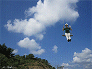
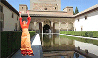

|

美
麗島狂想曲
Formosa
rhapsody
‧Taipei
101 with falling water
‧Kingdom
of desire
‧To swing in the Sky
‧Broken
Grand hotel
‧Thousands
of egrets
‧The
presidential palace with a pecking pelican
|
亞太幻境
Asia-Pacific
fantasy
‧Beijing
bronze lion with two tigers
‧Venus & Qin Dynasty's
Warriors
‧Merlion and Dragon
‧Sidney Opera
house with Mackay statue
‧Old slogans with two dogs
|

歐洲魅影
Phantom
in
Europe
‧A special conductor
in Vienna Golden Hall
‧Eiffel tower with
a pelican
‧Flamenco in the
Alhambra
‧Fountains
behind Khufu's Great Pyramid
‧Alexander-port
with cats
|
義大利幻象
Mirage in Italy
‧DragonBoat in Venice
‧Have
a picnic near Leaning Tower of Pisa
‧Motion
sculpture= Boy with a goose in Vatican
Museum
‧Trevi Fountain on canyon
‧Chinese Opera showing
in front of Galleria Vittorio
Emanuele II, Milan
|